The global energy transition has reached a critical juncture where the mere generation of renewable electrons is no longer sufficient to ensure the financial viability of market participants or the stability of the electrical grid. As of late 2024 and early 2025, the solar photovoltaic industry is undergoing a profound structural pivot, characterized by the transition of leading module manufacturers into integrated energy storage solution providers.
This strategic shift is not a voluntary diversification, but a necessary evolution driven by a collapse in upstream manufacturing margins, a massive oversupply of solar modules, and a fundamental shift in grid requirements toward dispatchable, firm renewable power. Market observers Bloomberg have increasingly framed this transition as the Anything-But-Solar trade, suggesting that the industry's future value lies not in the commodity of the panel itself, but in the storage, software, and grid services that make solar energy viable at scale.
The Economic Context of the Solar-Storage Convergence
The primary impetus for this pivot lies in the deteriorating economics of the standalone solar module market. In 2024, the global cumulative PV capacity surpassed 2.2 TWdc, with over 600 GW of new systems commissioned in that year alone. This growth, while impressive from a decarbonization perspective, has been characterized by a profitless growth cycle for manufacturers. According to International Energy Agency (IEA) Fierce competition and Chinese overcapacity led to a 50% decrease in global module spot prices between December 2022 and December 2023, with prices continuing to hit record lows of approximately $0.09 per watt-direct current (Wdc) by the end of 2024.
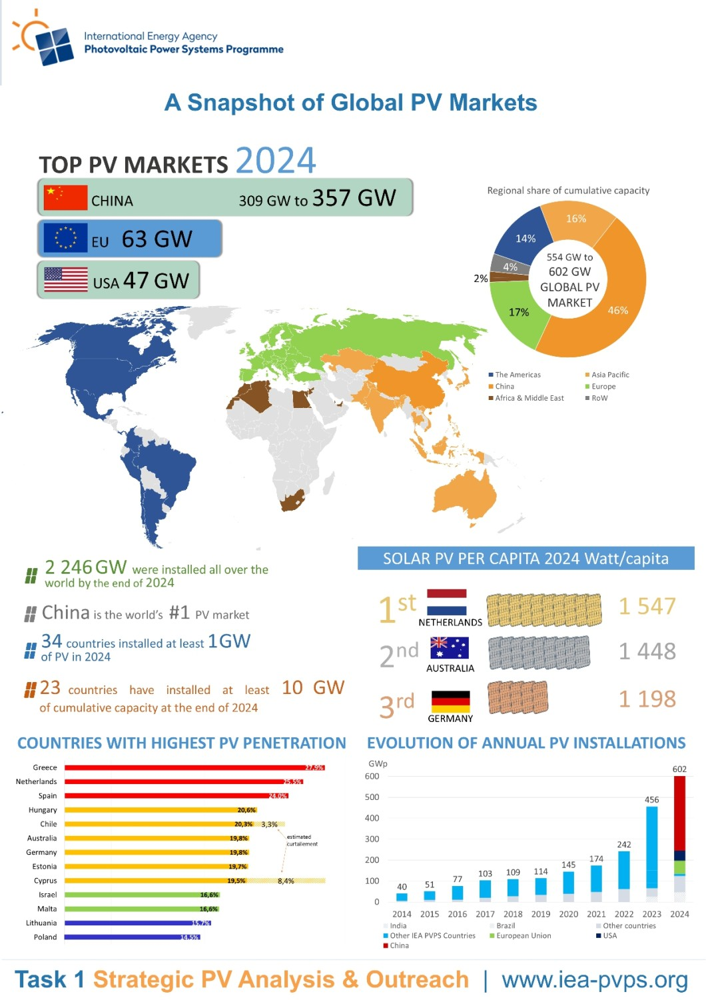
For the largest manufacturers, the financial pressure has been immense. Despite surging global installations, major players reported cumulative losses of nearly $5 billion since the beginning of 2024. Profit margins for leading wafer, cell, and module producers have declined through the first quarter of 2025, often dipping to -10% as manufacturers prioritize market share over short-term profitability. The surplus of panels became so significant in 2024 that it led to buying without installing in markets like Saudi Arabia and Pakistan, as buyers stockpiled ultra-cheap hardware. In this environment, BESS represents the unexpected winner of the clean energy trade, offering a vital alternative revenue stream with higher margins.
Global Solar PV Market Dynamics and Price Compression 2022-2025
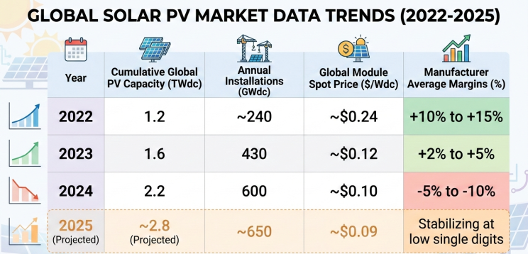
This collapse in margins has coincided with a transformation in the battery market. For years, stationary energy storage was the secondary market to the electric vehicle (EV) sector. However, as EV demand growth slowed in 2024 and 2025, major manufacturers began reallocating resources away from EV batteries toward storage systems. This has caused lithium-ion battery pack prices to plummet to a record low of $108 per kilowatt-hour (kWh) in 2025, a reduction of more than 50% since 2018.
The Strategic Imperative of Dispatchability
The inherent intermittency of solar power has historically been its greatest challenge. As solar penetration reaches higher percentages of total generation—surpassing 32% in regions like California—the duck curve phenomenon becomes more pronounced. This creates periods of negative electricity prices during the day when generation exceeds demand, followed by sharp price spikes in the evening when solar output ceases but demand remains high.
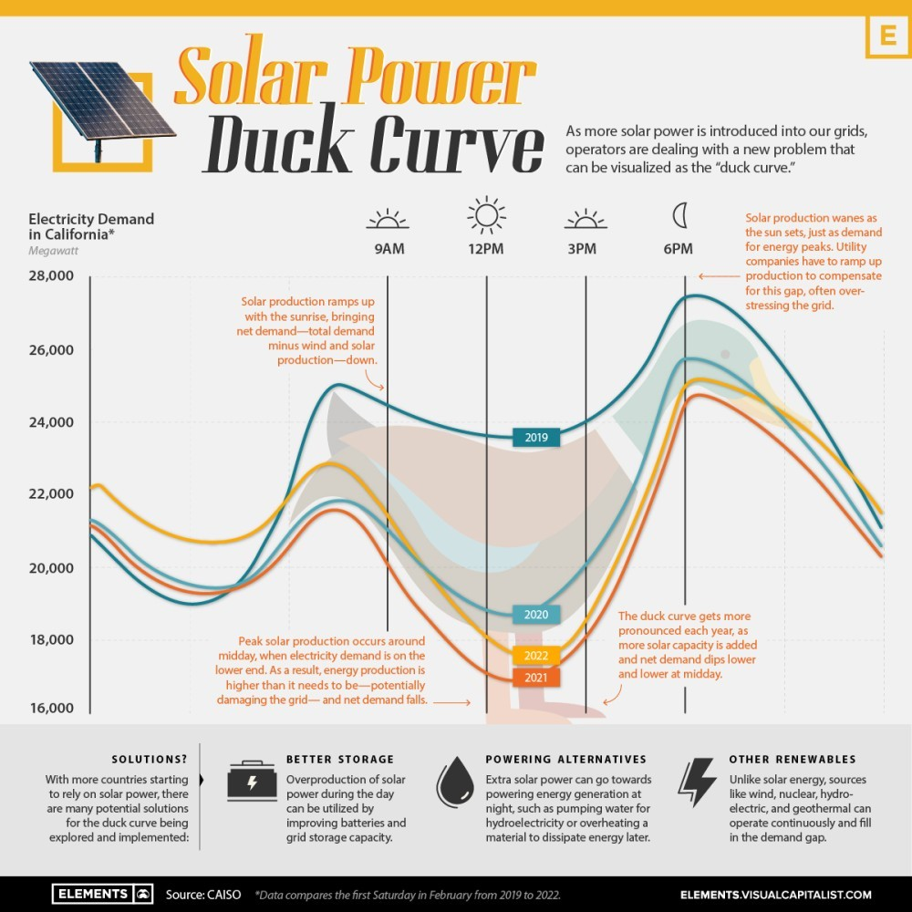
BESS provides the mechanism to smooth this intermittency, transforming a variable resource into a dispatchable asset. For solar manufacturers, providing the storage component allows them to offer a firm power product that is significantly more valuable to grid operators and corporate off takers than intermittent solar alone. This is particularly relevant for the growing demand from data centers and AI infrastructure, which require high-uptime, 24/7 clean energy and are driving storage to the forefront of the market faster than anticipated.
The Role of Battery Energy Storage in Grid Stability
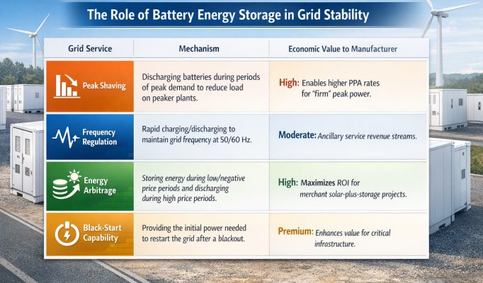
Technological Synergy: The Case for Solar-Plus-Storage Integration
One of the most compelling reasons for solar manufacturers to pivot toward BESS is the technical and engineering synergy between the two technologies. Manufacturers who control both the PV module and the storage system can optimize the entire power electronics chain, leading to higher system efficiency and lower costs.
DC-Coupled vs. AC-Coupled Architectures
A critical technical decision for integrated systems is the coupling architecture. In AC-coupled systems, the solar array and the battery system have separate inverters. While this offers flexibility for retrofits, it involves multiple stages of power conversion (DC to AC to DC and back to AC), which can lead to energy losses.
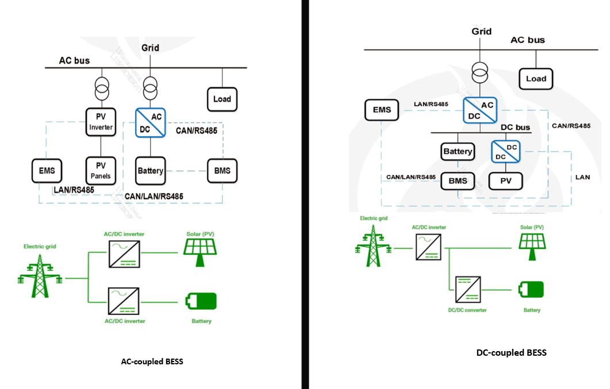
In contrast, DC-coupled systems allow the solar panels and batteries to share a single inverter infrastructure. This architecture enables direct DC-to-DC charging of the battery from the solar array, eliminating one conversion stage and achieving efficiencies of 95–98%. For solar manufacturers, the ability to design and provide an integrated DC-coupled system is a significant competitive advantage.
Efficiency and Revenue Gains from DC-Coupled Systems
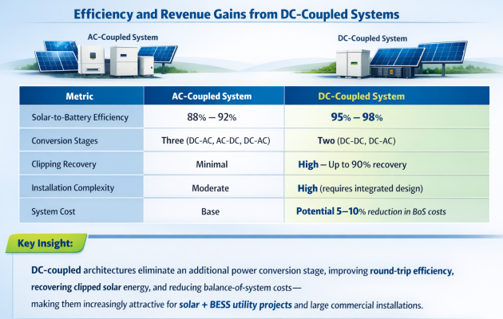
A major benefit of DC-coupling is clipping recovery. Solar inverters are typically sized smaller than the DC capacity of the solar array to maximize performance during low-light hours. However, during peak sun, the inverter clips the excess energy. In a DC-coupled system, this excess energy can be diverted directly into the batteries before it reaches the inverter. Industry data suggests that a 3 MW PV system with 1 MW of storage can recover over 265 MWh of additional energy annually through DC-coupling, generating millions in additional revenue over the projects life.

Corporate Transformation: Deep Dives into Lead Manufacturers
The strategic pivot is best illustrated by the organizational and product-level changes within the industry’s "Big Four" manufacturers: Canadian Solar, JinkoSolar, Trina Solar, and JA Solar.
Canadian Solar and the e-STORAGE Subsidiary
Canadian Solar Inc. has been a pioneer in the storage transition through its dedicated subsidiary, e-STORAGE . As of October 31, 2025, e-STORAGE reported a contracted backlog of $3.1 billion and is actively developing a pipeline of 81 GWh of battery energy storage.
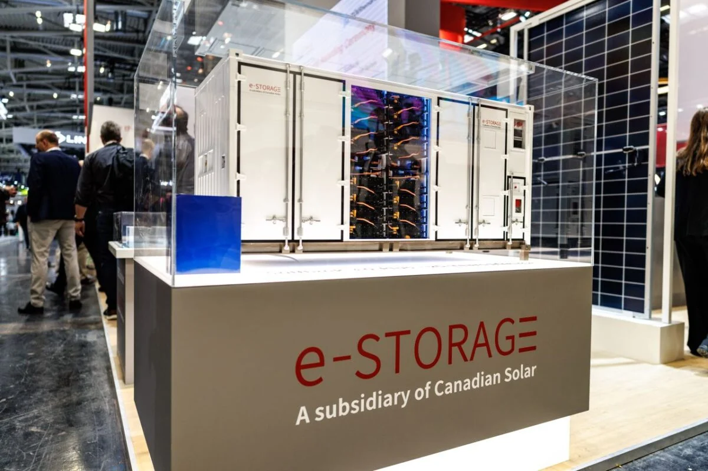
Their SolBank platform is a proprietary LFP battery system designed for utility-scale applications. The SolBank 3.0 Plus and FlexBank 1.0 models emphasize modularity and high energy density. Canadian Solar's strategy involves a full-lifecycle approach; for instance, in Japan, they hold a Wide Area Management Certificate, allowing them to take responsibility for nationwide end-of-life battery management.
JinkoSolar: Vertical Integration in Batteries
JinkoSolar Co. has applied the same vertical integration philosophy to the BESS market. By mid-2024, the company began the in-house production of 314 Ah LFP cells, effectively becoming a battery manufacturer.
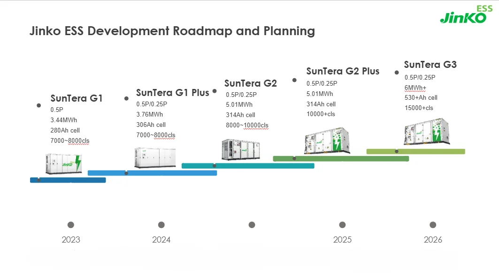
The SunTera G2 platform, their flagship utility storage solution, provides up to 5 MWh of capacity in a 20-foot container. A key differentiator for Jinko is their advanced liquid cooling thermal management, which maintains cell temperature differences within 3℃, significantly extending battery life and improving safety. Their expansion plans are aggressive, with battery manufacturing capacity projected to reach 37 GWh by late 2026.
Trina Solar: The Cell-to-AC offering
Trinasolar "Energy Storage Division" has focused on a "Cell-to-AC" vertical integration strategy. Their latest Elementa 3 system utilizes an in-house developed 587 Ah high-capacity cell, achieving a single-container energy density improvement of 12.3% over the previous generation. Trina emphasizes safety and lower Levelized Cost of Storage (LCOS) through integrated design that reduces site-level footprints by 24.7%.
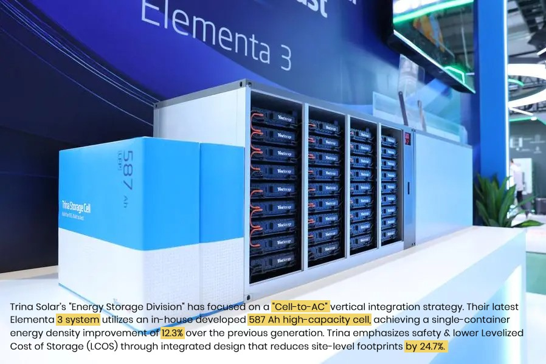
JA Solar: Market Segmentation and JAGalaxy
JA Solar utilizes a segmented branding strategy: BlueStar for residential, BluePlanet for commercial, and BlueGalaxy for utility applications. Their JAGalaxy 4.0 platform uses high-capacity cells (500 Ah-plus) to boost volumetric energy density by nearly 40% and offers a cycle life exceeding 12,000 cycles.
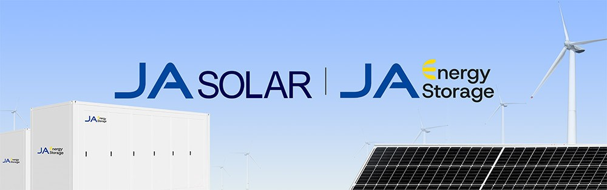
Operational Excellence and Manufacturing Benchmarks
As solar manufacturers transition into battery production, they must master a different set of manufacturing disciplines. Unlike solar modules, battery production is highly sensitive to yield, scrap rates, and production line productivity.
Manufacturing Cost and Efficiency Benchmarks for BESS
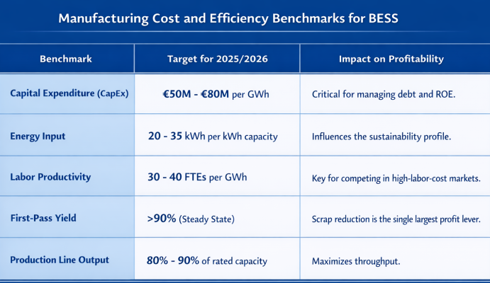
Software Frontier: AI and Energy Management
The hardware pivot is being accompanied by a software pivot. Integrated manufacturers are developing sophisticated platforms that use Artificial Intelligence (AI) to optimize performance.
AI Capabilities in Modern BESS Platforms
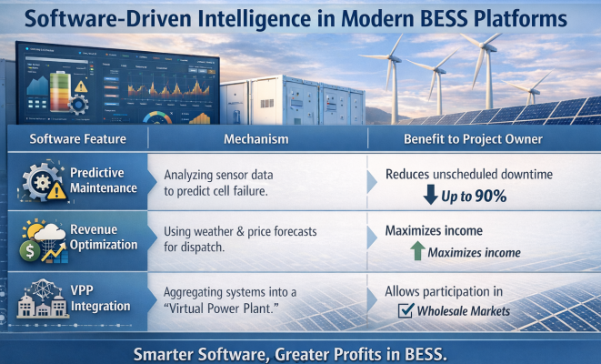
Platforms like SAJ’s Elekeeper and Sungrow’s iSolarCloud are becoming open hubs that coordinate solar, storage, and EV charging.
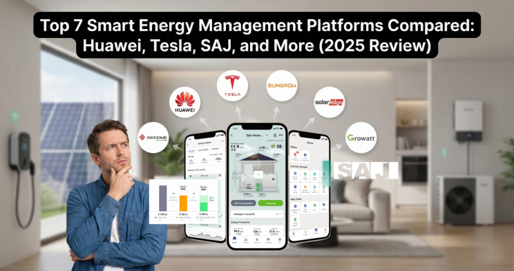
Conclusion: Toward an Integrated Clean Energy Future
The pivot of solar panel manufacturers toward Battery Energy Storage Systems is a definitive milestone in the global energy transition. It marks the end of the era of standalone renewable generation and the beginning of the era of integrated energy management. Driven by the economic necessity of escaping the module price war—which has caused billions in losses—and the technical necessity of providing grid-firm power, manufacturers are rewriting their business models to favor the "Anything-But-Solar" trade.

The successful firms of the future will not be those that simply make the cheapest panels, but those that provide the most reliable, efficient, and intelligent integrated systems. By mastering the manufacturing of battery cells, the physics of DC-coupling, and the algorithms of AI-driven dispatch, these companies are positioning themselves as the central architects of a resilient, decarbonized global power grid.